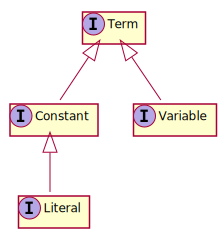

Core module
Download this module
The core module provides classes that implement the main interfaces of the graal-api. The name of these implementations are mostly prefixed with "Default".
Interfaces
The main implemented interfaces are the following:
- Atom
- This interface represents a logical atom. An atom is of the form p(e1…ek) where p is a predicate, k >= 1 the arity of p, and each ei is a term.
- AtomSet
- This interface represents a set of atoms. You can interpret this set as you want, disjunction or conjunction of atoms. However, in Graal, it is almost always interpreted as a conjunction.
- ConjunctiveQuery
- This interface represents a conjunctive query. A conjunctive query Q is a conjunction of atoms with a distinguished (ordered) subset of its variables (the answer variables). It is interpreted as the logical formula obtained from Q by existentially quantifying non-distinguished variables. When the set of answer variables is empty, Q is a Boolean query.
- NegativeConstraint
- This interface represents a negative constraint. A negative constraint C is a conjunction of atoms interpreted as the negation of its existential closure ¬∃ X C[X] where X denotes the set of variables. Equivalently, it can be seen as a rule of the form C -> ⊥, where ⊥ denotes the absurd symbol (which is always false).
- Ontology
-
This interface provides a way to manage sets of rules, negative constraints and predicates (i.e. the vocabulary).
- Rule
- This interface represents an existential rule. An existential rule is a positive rule of the form B -> H, where B and H are conjunctions of atoms; it is interpreted as the formula ∀X(∃Y B[X,Y] -> ∃Z H[X,Z]), or equivalently ∀X∀Y(B[X,Y] -> ∃Z H[X,Z]), where X are the variables shared by B and H, Y are the variables that occur only in B and Z the variables that occur only in H. Note that the Z variables are existentially quantified.
- Substitution
- A substitution is an mapping from a set of variables to a set of terms.
- Term
-
By analogy with natural language, where a noun phrase refers to an object, a term denotes a logical object referring to someone or something. A term is either a constant or variable.
- UnionOfConjunctiveQueries
- A union of conjunctive queries is a disjunction of conjunctive queries with the same (ordered) set of answer variables.
Factories
For these main classes, the core module provides factories to generate instances of these classes. The names of these factories are of the form Default<InterfaceName>Factory and their (singleton) instance is accessible by the instance() class method.
Term Hierarchy
An important factory is the DefaultTermFactory which provides instances for the Term hierarchy 
The DefaultInMemoryGraphStore
This class is an implementation of Store. A Store is an AtomSet assumed to contain a large dataset.
This module provides an in-memory implementation called DefaultInMemoryGraphStore. This implementation is based on an indexed graph structure.